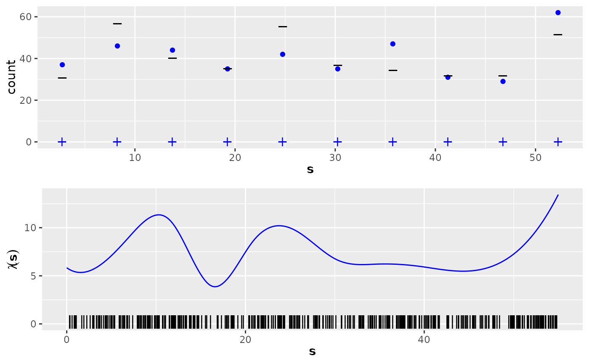

Point data and count data, together with intensity function and expected counts for a multimodal nonhomogeneous 1-dimensional Poisson process example. Counts are given for two different gridded data interval widths.
Usage
data(Poisson3_1D)Format
The data contain the following R objects:
lambda3_1DA function defining the intensity function of a nonhomogeneous Poisson process. Note that this function is only defined on the interval (0,55).
E_nc3aThe expected counts of gridded data for the wider bins (10 bins).
E_nc3bThe expected counts of gridded data for the wider bins (20 bins).
pts3The locations of the observed points (a data frame with one column, named
x).countdata3aA data frame with three columns, containing the count data for the 10-interval case:
countdata3bA data frame with three columns, containing the count data for the 20-interval case:
Examples
# \donttest{
if (require("ggplot2", quietly = TRUE)) {
data(Poisson3_1D)
# first the plots for the 10-bin case:
p1a <- ggplot(countdata3a) +
geom_point(data = countdata3a, aes(x = x, y = count), col = "blue") +
ylim(0, max(countdata3a$count, E_nc3a)) +
geom_point(
data = countdata3a, aes(x = x), y = 0, shape = "+",
col = "blue", cex = 4
) +
geom_point(
data = data.frame(x = countdata3a$x, y = E_nc3a),
aes(x = x), y = E_nc3a, shape = "_", cex = 5
) +
xlab(expression(bold(s))) +
ylab("count")
ss <- seq(0, 55, length.out = 200)
lambda <- lambda3_1D(ss)
p2a <- ggplot() +
geom_line(
data = data.frame(x = ss, y = lambda), aes(x = x, y = y),
col = "blue"
) +
ylim(0, max(lambda)) +
geom_point(data = pts3, aes(x = x), y = 0.2, shape = "|", cex = 4) +
xlab(expression(bold(s))) +
ylab(expression(lambda(bold(s))))
multiplot(p1a, p2a, cols = 1)
# Then the plots for the 20-bin case:
p1a <- ggplot(countdata3b) +
geom_point(data = countdata3b, aes(x = x, y = count), col = "blue") +
ylim(0, max(countdata3b$count, E_nc3b)) +
geom_point(
data = countdata3b, aes(x = x), y = 0, shape = "+",
col = "blue", cex = 4
) +
geom_point(
data = data.frame(x = countdata3b$x, y = E_nc3b),
aes(x = x), y = E_nc3b, shape = "_", cex = 5
) +
xlab(expression(bold(s))) +
ylab("count")
ss <- seq(0, 55, length.out = 200)
lambda <- lambda3_1D(ss)
p2a <- ggplot() +
geom_line(
data = data.frame(x = ss, y = lambda), aes(x = x, y = y),
col = "blue"
) +
ylim(0, max(lambda)) +
geom_point(data = pts3, aes(x = x), y = 0.2, shape = "|", cex = 4) +
xlab(expression(bold(s))) +
ylab(expression(lambda(bold(s))))
multiplot(p1a, p2a, cols = 1)
}

# }